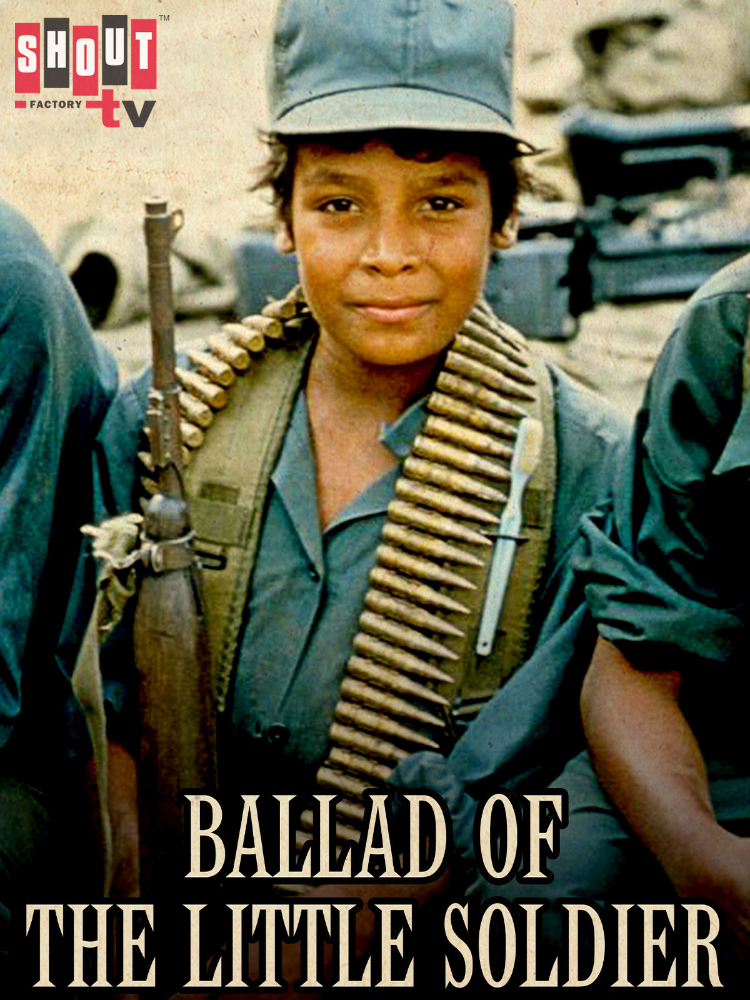

Werner Herzog
1984
46 minutes
This is a Werner Herzog documentary about child soldiers. This documentary was made long enough ago that some of these soldiers are probably adult soldiers by now and possibly even retired from their military careers and collecting their pensions.
As a progressive American, you are generally against children serving in the military, and certainly in a front-line capacity in combat roles. Films like Red Dawn make this look more glamorous than it probably is in real life. It's difficult to imagine any of these children being very disciplined, no matter how many Dr. Phil style boot camps they've attended. Some of them look like they might have some hustle, but the majority just look like oblivious children that someone handed a rifle to and gave rudimentary training to. At most they might be good for guarding Little Dieter and his friends or other low-stakes tasks that aren't likely to put them up against anyone else not suffering the effects of similar human rights abuses. And even in that case they should probably leave the actual interrogations to the grown-ups.
When you were a child and Commando was freshly on the screens of every local theater, you remember being in the machine gun isle of the toy section at the local department store. You were picking up one of the plastic machine guns with their red-lensed night scopes and their fully automatic rat-a-tat action, examining all the cool functionality. An older lady standing nearby looked scornfully at you and your mother and tut-tutted, "How dreadful, teaching kids how to maim and kill." She sneered at your mother as if she were Kissinger himself. Your mother grew indignant and seized the machine gun out of your hands, defiantly marching up to the cash register to buy it for you on the spot, much to your amazement. Normally such a toy would be a special Christmas request if you asked for it at all...
Time to choose something different: